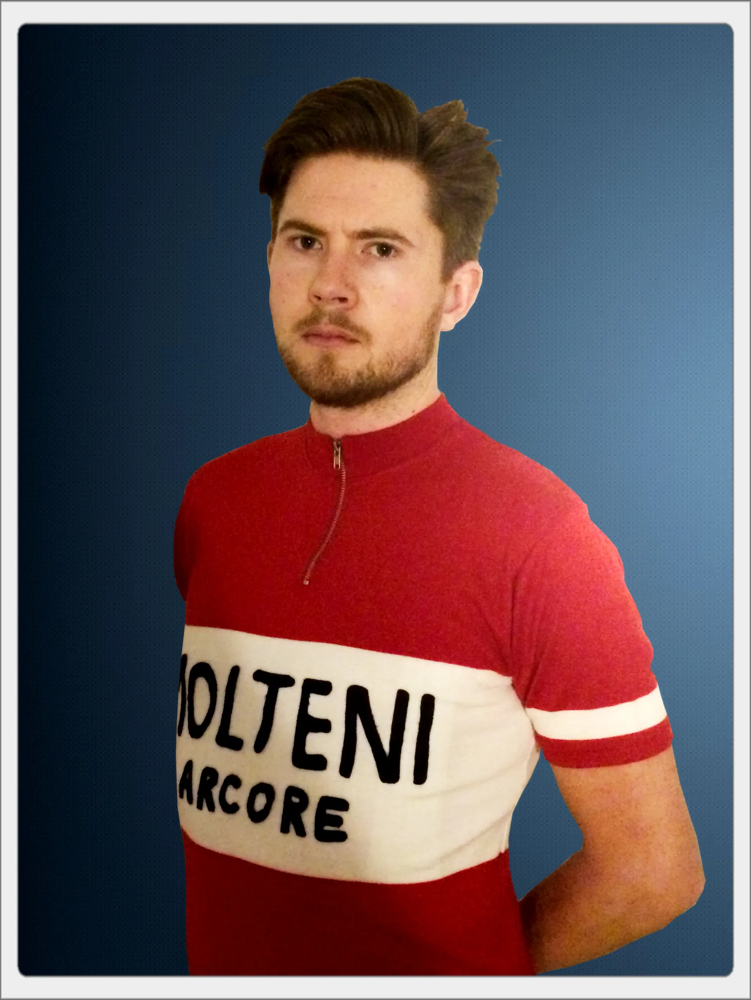
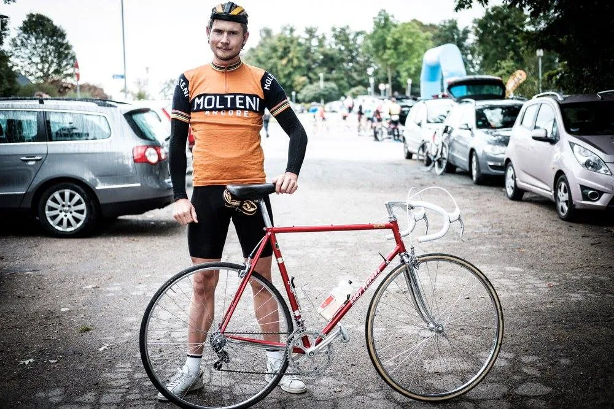
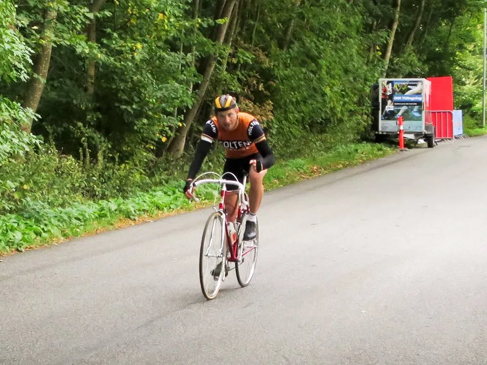

Rødt uld til Mark Petersen

Mark Petersen fik efter sin sejr ved Kroppedal Grand Prix 2016 et tilbud, som han ikke kunne sige nej til.
To måneder senere stillede Mark op ved Retro DM i linjeløb, som stagiaire i orange Molteni-uldtrøje. Og vandt.
- En ting er at vinde løbet – at vinde på dagen. Det var et godt løb. Jeg havde overskud og alt faldt i hak. Men noget andet er æren – og trøjen. Det er stort og den er super cool, fortæller Mark Petersen.

Som det sig hør og bør har Squadra Molteni fået lavet en deres egen version af mesterskabstrøjen til Mark. Selvfølgelig i en god italiensk blandingsuld.
– I respekt for den officielle dannebrogstrøje, har vi valgt en trøje, hvor der ikke er et dannebrogskors. Retro DM er trods alt uofficielt, så det blev kun til den hvide ring om brystet på den mørkerøde baggrund, siger Niels Bjørnsteen.
Retro DM var vejen til fast kontrakt
En rytter i den kaliber kræver et greb i lommen, men det har ikke været noget problem.
– Vi er tilfredse. Både med Mark og trøjen, siger Kasper Sørensen, der styrer det økonomiske på Squadra Molteni med rund hånd.
– Mark kørte sig fra stagiaire til fast mand på kun ét løb. Vi har stadig massere af forskudspenge fra den kommende nøgenkalender, som vi laver til Eurowoman, så der har været råd til både trøje og fastansættelse til Mark, fastslår Kasper.
Mark Petersen ser frem mod den kommende sæson
– Jeg stiller op i de løb, der nu kan lade sig gøre, men kalenderen ser lidt booket ud til sommer, fortæller Mark lidt kryptisk.
Han render ind i en af de begivenheder, der glædeligste vis rydder hele kalenderen. Mark skal nemlig være far til juni.
Se billederne fra Marks sejr ved Retro-DM 2016




